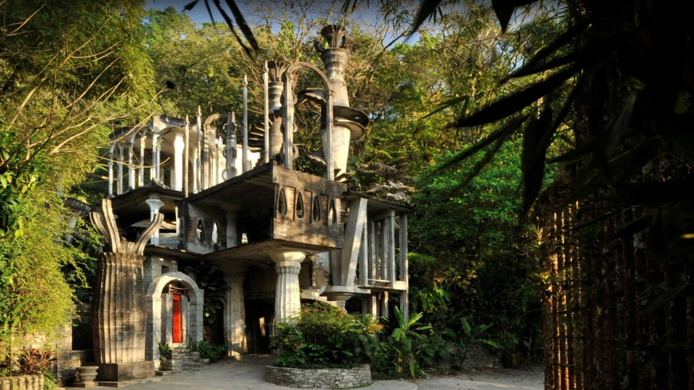

El patrimonio Cultural se considera fuente esencial de identidad, ya que sus diversas manifestaciones son primordiales para vincular el pasado y el presente de los pueblos.
El Estado de San Luis Potosí declara como Patrimonio Cultural Estatal la propiedad conocida como Las Pozas y el inmueble conocido como El Castillo ubicados en el municipio de Xilitla, San Luis Potosí, lugar donde Edward James llevó a cabo la integración de su obra artística, escultórica y arquitectónica dentro de un paisaje rural y urbano.
Cabe destacar que en estos sitios Edward James, artista Inglés, con la colaboración de Plutarco Gastélum Esquer, adquiere los predios en mención en el año de 1948 e inicia las intervenciones que concibió y realizó el extranjero para su refugio privado e interés creativo en 1952. En las Pozas, zona de cascadas, aves y exuberante vegetación, el artista realiza una serie de construcciones, esculturas, caminos, pozas y jardines con características surealistas de sorprendente creatividad que se integran al paisaje natural de la selva de forma singular y única creando un paisaje cultural.
Camino Paseo Las Pozas
Barrio La Conchita
CP 79902, Xilitla, San Luis Potosí